항로표지산업기사 (2003-08-10 기출문제)
1과목: 항로표지일반
1. 광원의 빛을 굴절 및 반사시키는 작용을 이용하여 좁은범위의 각도에서 높은 광도를 얻기 위하여 이용하는 것으로 맞는 것은?
- 렌즈
- 색 필터
- 렌즈 덮개
- 항로표지용 전구
(정답률: 알수없음)

2. 선박 항해 시 이용하는 물표의 선정에 있어서의 주의사항이 아닌 것은?
- 해도상의 위치가 명확하고 뚜렷한 물표를 선정한다.
- 먼 물표보다는 적당히 가까운 물표를 선택한다.
- 가능한한 3개이상의 물표를 선정한다.
- 물표 상호간의 kr도는 10∼25°인 것을 선정하는 것이 좋다.
(정답률: 알수없음)
3. 등선, 등부표 및 랜비(LANBY)의 용도와 거리가 가장 먼 것은?
- 위험한 여울목, 사주 암초 등의 표시
- 육지초인 위치의 표시
- 통항분리대 진입로의 표시
- 긴 통항로 내에서 직선항로의 표시
(정답률: 알수없음)
4. 항로표지를 설치하고 관리하는 권한은 누구에게 있는가?
- 해양수산부장관
- 건설교통부장관
- 대통령
- 국무총리
(정답률: 알수없음)
5. 항로표지위탁관리업을 영위하고자 하는 자는 시설 및 장비의 등록기준을 갖추고 해양수산부장관에게 등록하도록 되어있다. 이때 등록기준이 아닌 것은?
- 선박(5톤 이상)
- 사무실
- 선박(2톤 이상)
- 측정장비
(정답률: 알수없음)
6. 해안선에서 20마일(해리)이상의 해양을 항해하는 선박에 게 육지를 초인하게 하거나 선위를 확정함에 이용할 수 있도록 설치하는 항로표지는 어느 것인가?
- 육지초인표지
- 항양표지
- 연안표지
- 항만인지표지
(정답률: 알수없음)
7. 우리나라의 부표의 종류, 형상, 도색, 두표에 관한 기준은?
- IALA 해상부표식 " A " 방식
- IALA 해상부표식 " B " 방식
- IALA 해상부표식 " C " 방식
- IALA 해상부표식 " D " 방식
(정답률: 알수없음)
8. 형상표지란 무엇인가?
- 모양이 아름다운 표지이다.
- 입표, 부표, 육표는 제외된다.
- 도표는 형상 표지가 아니다.
- 주표를 말한다.
(정답률: 알수없음)
9. 광학적 광달거리(I)는 (E· d2)/Td로 구한다. 여기서 T가 의미하는 것은?
- 광원의 광도
- 명목적 광달거리
- 한계가시조도
- 국제가시도규정에 의한 전파계수
(정답률: 알수없음)
10. 선박이 2시간동안 12해리를 항해하였다면 이 선박의 속력은 얼마인가?
- 4놋트
- 6놋트
- 8놋트
- 10놋트
(정답률: 알수없음)
11. 분당 50섬광이상 80섬광 미만의 비율로 반복되는 등화를 무엇이라 하는가?
- 급섬광
- 연속급섬광
- 초급섬광
- 군급섬광
(정답률: 알수없음)
12. 항로표지장비 및 용품에 대한 검사의 종류가 아닌 것은 어느것인가?
- 사용전검사
- 정기검사
- 변경검사
- 임시검사
(정답률: 알수없음)
13. IALA해상부표식에 있어서 색이 다른 등광은 항로표지의 식별을 돕기 위하여 사용되고 있는데, 백색광을 사용할 수 없는 항로표지는 어느 것인가?
- 방위표지
- 고립장해표지
- 안전수역표지
- 특수표지
(정답률: 알수없음)
14. 해상교통안전법 또는 개항질서법상 규정된 항로로서 자연조건, 교통조건, 안전성, 경제성을 고려하여 설정된 항로로 법적 강제력이 있는 항로는?
- 추천항로
- 권고항로
- 계획항로
- 법정항로
(정답률: 알수없음)
15. 항로표지(등표) 구조물 원형단면의 설계시 철근의 피복두께는?
- 4㎝이상
- 5㎝이상
- 6㎝이상
- 7㎝이상
(정답률: 알수없음)
16. 항로에 관한 용어 중 추천항로란 무엇인가?
- 해상교통안전법 또는 개항질서법상 규정된 항로로서 자연조건, 교통조건, 안전성, 경제성을 고려하여 설정된 항로로서 법적 강제력이 있는 항로
- 법정항로와 같으나 권한 있는 당국이 설정하여 행정지도 하는 항로이나 법적구속력이 없는 항로
- 초대형선의 안전항해를 위하여 신항만개발 또는 기존항로의 정비에 따라 배선계획상 최대선박의 제원을 고려하여 항로폭과 수심을 확보하고 교통분리 등 항행관제를 하는 항로
- 해역의 자연적 조건만을 고려하여 수로기관장이 해도상에 도재하는 항로
(정답률: 알수없음)
17. 주로 항박도에 가장 많이 사용하는 도법은?
- 점장도법
- 대권도법
- 평면도법
- 다원추도법
(정답률: 알수없음)
18. 부표의 도색을 홍백 종선으로 표시하여야 할 형상표지는?
- B지역의 우현표지
- 북방위표지
- 고립장해표지
- 안전수역표지
(정답률: 알수없음)
19. IALA 해상부표식에서 A지역과 B지역으로 도색이나 등색등이 다르게 구분되는 표지는?
- 측방표지
- 방위표지
- 고립장해표지
- 안전수역표지
(정답률: 알수없음)
20. 협수로를 표시하기 위하여 항로의 연장선 위에 앞뒤로 높고 낮은 2개 이상의 육표를 설치하여 선박을 유도하는 주간표지는?
- 입표
- 도표
- 부표
- 육표
(정답률: 알수없음)
2과목: 전기, 전자기초
21. 그림의 입력 A, B, C와 출력 D의 관계는?
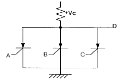
- AND
- OR
- NOT
- NOR
(정답률: 알수없음)
22. 인버터(inverter)의 기본적인 기능은?
- 직류전력을 직류전력으로 변환
- 직류전력을 교류전력으로 변환
- 교류전력을 직류전력으로 변환
- 교류전력을 교류전력으로 변환
(정답률: 알수없음)
23. 배전반용 계기에 주로 사용되는 제어 방식은?
- 비율제어
- 액체제어
- 중력제어
- 스프링제어
(정답률: 알수없음)
24. 정류회로중 맥동율이 가장 적은 방식은?
- 단상전파회로
- 단상반파회로
- 3상전파회로
- 3상반파회로
(정답률: 알수없음)
25. 납 합금 격자에 양극 작용 물질을 채운 양극판을 가진 축전지의 형식을 무엇이라 하는가?
- 클래드식
- 포켓식
- 페이스트식
- 소결식
(정답률: 알수없음)
26. 디젤 기관을 이용한 자가발전설비의 부속장치중 일정한 주파수를 얻는 것과 관계가 깊은 것은?
- 셀모터
- 연료공급조
- 조속기
- 감압수조
(정답률: 알수없음)
27. Δ 결선된 대칭 3상 전원이 있다. 선 전류는 상 전류의 몇배인가?
- 0.5배
- 1배
- √2
- √3
(정답률: 알수없음)
28. 태양전지에 축전장치가 필요한 이유는?
- 태양광이 없는 시기에 대비하여
- 빛의 반사를 방지하기 위하여
- 빛을 최대한으로 받아들이기 위하여
- 전지를 견고하게 하기 위하여
(정답률: 알수없음)
29. 전류 I[A]에 대한 P점의 자계 H[A/m]의 방향이 옳게 표시된 것은? (단, ⊙은 지면을 나오는 방향, ⊗은 지면으로 들어가는 방향 표시이다.)
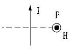
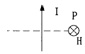
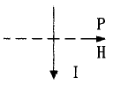
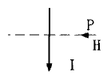
(정답률: 알수없음)
30. 2분 동안에 876000[J]의 일을 한다면 전력[W]은?
- 4800
- 5700
- 6500
- 7300
(정답률: 알수없음)
31. 그림의 합성정전용량을 구하시오.
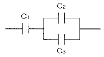
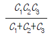
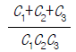
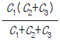
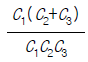
(정답률: 알수없음)
32. 3개의 저항 R1, R2, R3〔Ω 〕을 병렬로 접속했을 때의 합성 저항은?
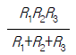
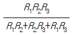
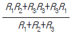
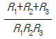
(정답률: 알수없음)
33. 축전지의 설폐션(sulfation)현상이 아닌 것은?
- 과도적 서지전류가 일어난다.
- 극판이 백색으로 되거나 백색 반점이 생긴다.
- 비중이 저하하고 충전 용량이 감소한다.
- 충전시 전압상승이 빠르고 다량으로 가스가 발생한다
(정답률: 알수없음)
34. 교류발전기의 병렬 운전에서 고려하지 않아도 되는 것은?
- 발전기의 용량이 같을 것
- 기전력의 크기가 같을 것
- 기전력의 위상이 같을 것
- 기전력의 파형이 같을 것
(정답률: 알수없음)
35. 아래 접점에 대해 가장 잘 표현한 것은?
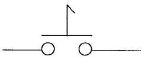
- 순시접점
- 잔류접점
- 전자접점
- 타이머접점
(정답률: 알수없음)
36. 직류발전기의 종류가 아닌 것은?
- 분권발전기
- 직권발전기
- 복권발전기
- 동기발전기
(정답률: 알수없음)
37. 직류 발전기의 병렬운전 조건이 아닌 것은?
- 단자 전압이 같을 것
- 외부 특성이 같을 것
- 극성을 같게 할 것
- 용량이 같을 것
(정답률: 알수없음)
38. 접지 공사의 접지선은 접지선임을 한눈에 알아 볼 수 있는 경우를 제외하고 어떤 색의 절연전선을 사용하는가?
- 녹색
- 적색
- 황색
- 백색
(정답률: 알수없음)
39. 1[HP]은 몇[W]인가?
- 746
- 754
- 763
- 735
(정답률: 알수없음)
40. 다음 회로의 쌍대회로는?
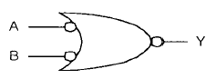
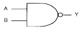
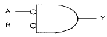
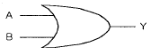
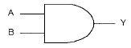
(정답률: 알수없음)
3과목: 광파, 음파 표지
41. 다음은 부표의 복원성에 관한 설명이다. 옳지 않은 것은?
- 물 속에 잠긴 체적의 중심을 부심이라 한다.
- 부심에서 경심까지의 높이를 BM이라 한다.
- 복원모멘트의 크기는 GM에 비례하여 감소한다.
- GM이 클수록 부표의 안전성이 크다.
(정답률: 알수없음)
42. 다음 중 등탑 기초형식의 종류가 아닌 것은?
- 중력식기초
- 반력식기초
- 부착식기초
- 음력식기초
(정답률: 알수없음)
43. 다음 중 광도의 단위는?
- lx
- cd
- nm
- lm
(정답률: 알수없음)
44. 야간에 광학적 광달거리가 제한되는 사항이 아닌 것은?
- 거리 3승에 비례하는 발산감쇠
- 표지등화의 강도
- 대기투과율
- 등화를 인식하는 각막상의 최소의 조도
(정답률: 알수없음)
45. 대형 회전 광학계중 일본에서 분류하고 있는 렌즈의 등급은 무엇으로 표시하는가?
- 렌즈의 구조
- 렌즈의 내경
- 렌즈의 외경
- 반사경의 크기
(정답률: 알수없음)
46. 다음 중 등부표의 설치를 위한 해역을 올바르게 구분한 것은?
- 원양, 연안, 내해, 협수로
- 외해, 내해, 협수로 해역, 급류해역
- 외해, 준외해, 내해, 급류해역
- 외해, 준외해, 내해, 협수로 해역
(정답률: 알수없음)
47. 다음 중 용어와 단위가 잘못 짝지어진 것은?
- 휘도- cd/m2
- 광속 - lm
- 조도 - cd/m2
- 방사속 - W
(정답률: 알수없음)
48. 다음 중 등명기 상부등체 구성부품에 해당되지 않는 것은?
- 렌즈
- 충전조절기
- 색필터
- 렌즈보호대
(정답률: 알수없음)
49. 항로표지 중 두표가 흑색 구형 2개인 것은?
- 안전 수역 표지
- 북방위 표지
- 고립 장애 표지
- 특수 표지
(정답률: 알수없음)
50. 다음 중 등화의 점멸을 위하여 사용하는 방법이 아닌 것은?
- 전력의 공급을 주기적으로 단속한다.
- 광원의 주위에서 개구가 있는 스크린을 수직방향으로 회전시킨다.
- 펜슬빔(pencil beam)을 발하는 섬광렌즈 또는 반사경을 수평방향으로 회전시킨다.
- 광원전면에서 셔터를 개폐한다.
(정답률: 알수없음)
51. 최근 등대 구조물에 가장 많이 사용되는 재료는?
- 철재
- 석재
- 콘크리트
- 벽돌
(정답률: 알수없음)
52. 압축공기에 의하여 사이렌을 취명시키는 방법으로 압축공기를 만드는데 필요한 발동기와 압축공기를 통과시켜 소리를 내는 공기압축기로 구성되어진 무신호기는 다음 중 어느 것인가?
- 에어사이렌
- 다이야폰
- 모터사이렌
- 다이야후램폰
(정답률: 알수없음)
53. 다음 중 음파의 속도에 가장 크게 영향을 주는 것은?
- 음파의 진동수
- 공기중의 습도
- 대기압의 변화
- 공기의 온도
(정답률: 알수없음)
54. 빛이 물질의 경계면에서 굴절될 때 그 굴절률에 관한 설명 중 가장 타당한 것은?
- 빛의 파장이 길수록 큰 값을 갖는다.
- 빛의 파장이 짧을수록 큰 값을 갖는다.
- 빛의 세기가 강할수록 큰 값을 갖는다.
- 빛의 세기가 약할수록 큰 값을 갖는다.
(정답률: 알수없음)
55. 등대 및 등표의 기초중 경암지반에 적합한 기초형식은?
- 중력식
- 반력식
- 부착식
- 조립식
(정답률: 알수없음)
56. 1977년 IALA에서 권고한 실효광도 산출을 위한 계산방식과 관계가 없는 것은?
- 슈미트 크라우센 방식
- 알라드 방식
- 블론델· 레이· 더글러스 방식
- 코시미더 방식
(정답률: 알수없음)
57. 다음 중 전자석을 이용하여 금속판을 진동시켜 취명하는 것은?
- 다이야폰
- 모터사이렌
- 다이야후램폰
- 에어사이렌
(정답률: 알수없음)
58. 다음 중 안전수역표지로 이용되는 등질은?
- 단섬광
- 군섬광
- 급섬광
- 모르스광
(정답률: 알수없음)
59. 다음 중 급섬광을 나타내는 등질의 약기는 무엇인가?
- F
- F1
- Q
- Alt
(정답률: 알수없음)
60. 등대의 높이가 36m, 관측자의 안고가 25m인 경우의 지리학적 광달거리는 약 얼마인가?
- 23 마일
- 18마일
- 12마일
- 10마일
(정답률: 알수없음)
4과목: 전파표지 및 시스템 이용
61. 다음중 포항 LORAN-C 주국(한국체인)에 대한 종국이 아닌 곳은?
- 광 주
- 간절곶
- 게사시
- 니지마
(정답률: 알수없음)
62. GPS 위성이 궤도상에서 0.5항성일에 일주한다. 이를 지구상에서 볼 때 같은 위치를 통과하는 주기는?
- 23시간 52분 15초
- 23시간 56분 4초
- 23시간 58분 11초
- 24시간
(정답률: 알수없음)
63. 다음의 8K50F(G)3E 로 표시된 전파형식 중 필요주파수 대폭을 나타내는 문자는 어느 것인가?
- K
- F
- G
- E
(정답률: 알수없음)
64. 다음 중 선박용 레이더의 진동작 레이더 운영방식에 대한 설명으로 옳은 것은?
- 이 방식은 상대 벡터를 표시하므로 최근접점(CPA)을 쉽게 구할 수가 있다.
- 모든 물체는 자선의 움직임에 대하여 상대적인 움직임을 표시한다.
- 선박에서 일반적으로 많이 사용되는 방식으로 자선의 위치가 PPI상의 어느 한점에 고정되어 있다.
- 선박물표의 영상이동 방향은 그 선수가 놓여진 방향, 즉 단면을 나타내므로 타선의 항법관계를 쉽게 확인할 수 있다.
(정답률: 알수없음)
65. GPS는 의사거리를 이용하여 삼각측량의 방법으로 사용자의 위치를 계산한다. 이 때 의사거리란 무엇을 뜻하는가?
- 수신되는 신호의 송신 시각에서의 위성과 사용자 사이의 거리에 시각오차가 포함된 거리
- 수신되는 신호의 수신 시각에서의 위성과 사용자 사이의 거리에 시각 오차가 포함된 거리
- 수신되는 신호의 송신 시각에서의 위성과 사용자 사이의 실제 거리
- 수신되는 신호의 수신 시각에서의 위성과 사용자 사이의 실제 거리
(정답률: 알수없음)
66. GPS의 주제어국은 어디에 있는가?
- 콜로라도 스프링스(Colorado Springs)
- 하와이(Hawaii)
- 콰자레인(Kwajalein)
- 디에고 가르시아(Diego Garcia)
(정답률: 알수없음)
67. 전파의 전파경로 감쇄량을 나타내는 함수 중 도전율을 나타내는 단위로서 맞는것은?
- ㎐/δ
- ℧/m
- σ/ωε
- PRR(c/s)
(정답률: 알수없음)
68. 다음중 전파의 편성에 의한 분류에 해당하지 않는 것은?
- 직선편파
- 곡면편파
- 원편파
- 타원편파
(정답률: 알수없음)
69. 주파수감응형 레이더비컨 시스템구성을 크게 4가지로 분류할 때 이에 해당되지 않는 것은?
- 수신부(Rx)
- 송신부(Tx)
- 제어부(CONT)
- 발진부(OSC)
(정답률: 알수없음)
70. 다음 중에서 레이더 비콘의 사용 목적으로 올바르지 못한 것은?
- 눈에 잘 띄지 않는 해안선에 있는 위치의 식별과 거리측정
- 선박의 탐지를 강화하기 위하여 선박에 사용
- 거리 측정은 되나 특징이 없는 해안선에 있는 위치의 식별
- 교량하의 가항폭 표시
(정답률: 알수없음)
71. 다음중 DGPS의 주파수 및 신호형태가 옳은 것은?
- 90∼110㎑/펄스파
- 283∼325㎑/지속파
- 90∼110㎒/펄스파
- 283∼325㎒/지속파
(정답률: 알수없음)
72. 우리나라 중파무선표지(라디오비콘, DGPS)에 채택된 변조 방식은?
- ASK
- FSK
- MSK
- PSK
(정답률: 알수없음)
73. 로란-C 시스템 운용에서 해당기선의 이용 불가능을 인식하게 하는 것은?
- 브링크(Blink)
- 드룹(DROOP)
- GRR(Group Repeation Rate)
- 제로 크로싱(Zero Crossing)
(정답률: 알수없음)
74. 다음의 LORAN-C 통제 방법 중에서 "주국의 감시용 수신기로부터의 정보를 이용한 기선통제 방식"은 무엇인가?
- Alpha 통제
- Bravo 통제
- Charlie 통제
- Delta 통제
(정답률: 알수없음)
75. 등대 태양광 발전시스템의 용량계산에서 기준으로 삼는 하루 평균 발전시간은?
- 3∼4시간
- 4∼6시간
- 6∼8시간
- 8∼10시간
(정답률: 알수없음)
76. 전파잡음방해의 개선책으로 틀린 것은?
- 안테나에 Notch Filter를 설치한다.
- 수신기의 실효대역폭을 가능한 한 넓게 한다.
- 송신전력을 크게 한다.
- 안테나의 지향성을 예민하게 한다.
(정답률: 알수없음)
77. VTS에서 레이다의 방위 분해능을 결정하는 요인으로 가장 적당한 것은?
- 레이다의 송신펄스폭에 의해 결정된다.
- 송신펄스 지터 및 A/D샘플링기간에 의해 결정된다.
- 레이다의 감시거리와 안테나 수평빔폭에 의해 결정된다.
- 안테나를 회전시키는 회전 엔코더에 의해 결정된다.
(정답률: 알수없음)
78. 다음 전파잡음중 자연잡음이 아닌 것은?
- 우주잡음
- 태양잡음
- 은하잡음
- 지상잡음
(정답률: 알수없음)
79. 안개가 많이 끼고 접근항로가 길며 비교적 직선인 항구의 접근로를 표시하기에 적합한 무선표지는?
- Radio Range
- Course Beacon
- Rotary Beacon
- Talking Beacon
(정답률: 알수없음)
80. 전파의 속도를 나타낸 것 중 맞는 것은?
- 3 × 106m/s
- 3 × 107m/s
- 3 × 108m/s
- 3 × 109m/s
(정답률: 알수없음)